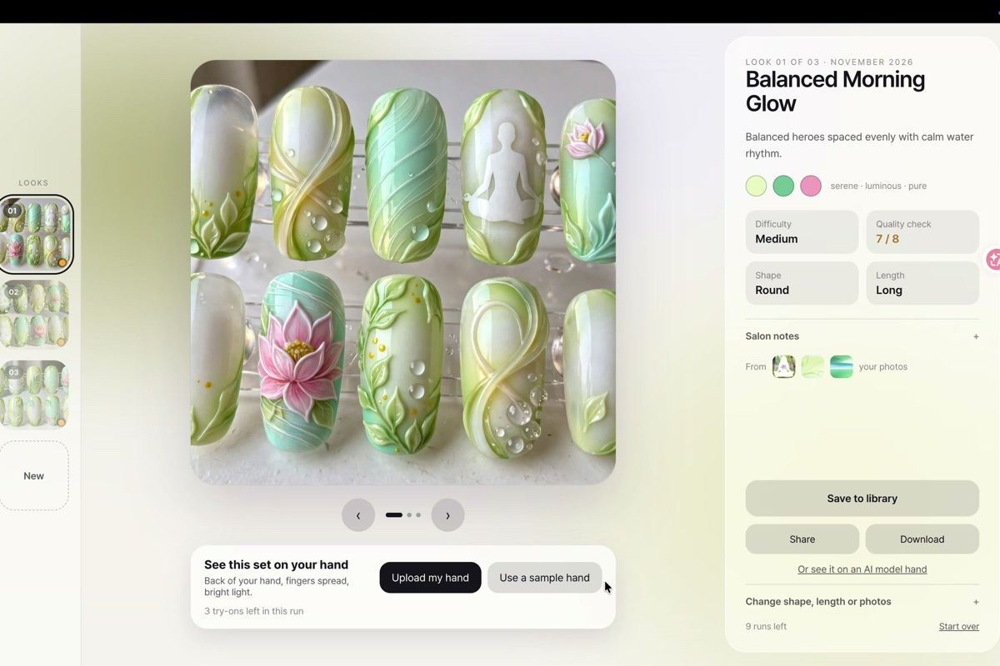
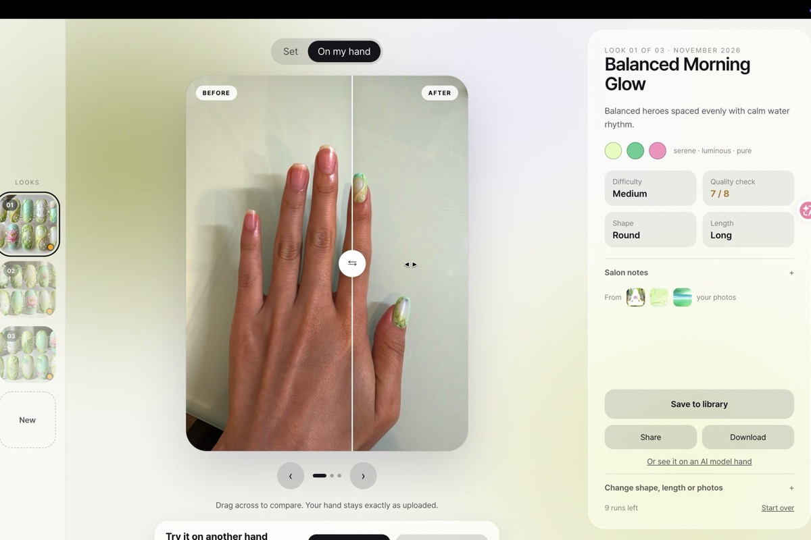

How I Made a Try-On API Put Each Nail on the Right Finger
My side project idala turns photos you love into press-on nail sets, then shows the set on a photo of your own hand. It just placed 2nd out of 440+ projects in Perfect Corp's YouCam API hackathon. This is the honest version of how it got there: four months of image models taking my words too literally, and one long day of making a try-on API do something it was never promised to do.

What a user gets: three ten-tip sets designed from their photos. This one came from a lotus, soft green bubbles and a calm green sea.
Part 1. Image models read every word literally
I started idala in July 2026. The idea was simple: drop in a few inspiration photos, get nail designs back. The first lesson arrived fast. Image models do not read a prompt the way a person does. They draw the words.
A trend note said "glazed donut" nails, meaning a pearly finish. The model drew actual donuts.
My prompt called one design the "anchor tip", meaning the main one. In a 10-set pilot, 7 of 10 sets had a real ⚓ on them.
"Exactly 10 tips" was ignored in 5 of 10 sets, and "no ombre" got ombre anyway.
"Charm" kept turning into a hanging pendant with a ring. Renaming it a "flat metal stud" and describing it in positive physical terms (solid, cast, lying on the surface) took dangling rings from 3 of 3 to 0 of 3.
Inside a prompt, any word with a second meaning becomes a picture. I keep a list of these trap words now, and every plan is checked against it before a single image is paid for.
Since one generation could never be trusted, I stopped trying to get it right in one shot. idala generates, then a vision model inspects every set on 8 points (tip count, palette, physics, whether one main motif leads), and redraws anything that fails before the user sees it.
Part 2. The hackathon, and the real problem
For a Meta hackathon in late October I added "see it on your hand": SAM 3.1 found the nails, and an image model painted them. It worked, but the model kept quietly redrawing the whole hand. My fix was to segment the nails and composite only the nail mask back onto the original photo, so the skin and pose never changed.
Then the YouCam API hackathon opened. Its AI Nail Transfer API does photoreal nail try-on, the kind that looks like a manicure instead of a sticker. On November 1 I swapped it in. And within hours I hit the problem this whole post is about.
Part 3. One call does not know which tip goes where
idala's promise is specific. If you picked the set with the lotus on the ring finger, that exact lotus tip should land on your ring finger. Here is what I tried that day, in order.
Send the AI wear shot as the reference. The model behind the wear shot had drawn the set slightly differently, so the wrong design landed on the hand.
Build the reference myself: cut the five top-row tips out of the set photo and lay them on a skin-toned background. YouCam copies "tips on skin" most faithfully. Background removal by corner color failed on real product photos (acrylic stands, shadows), so I switched to SAM with the prompt "press-on nail tip" and cut each one as a rounded rectangle so 3D decorations survive.
Test whether order is kept. I flipped the order of the tips in the reference and ran it again. The result did not flip with it. That settled it: one call transfers the overall style, not a tip-to-finger mapping.
Left: a single transfer copies the look but not the mapping. Right: each call only has one design to place, so there is nothing to mix up. The base call fills in any finger whose own call fails.
Part 4. Stop fighting the model, change the question
I could have kept rewriting the reference image, hoping the model would respect order. Instead I asked a different question: what if each call only had one design to place? Then there is no order to get wrong.
Find the five nails and the thumb. SAM segments the hand photo into fingernails. On the back of a hand, the thumbnail sits lowest and at one end of the row, so I can sort thumb to pinky without asking the user.
Make five references. Reference k is tip k repeated across a skin-toned background.
Call YouCam six times in parallel: five per-finger calls plus one base call with the whole set.
Take one nail from each result. From result k, SAM finds the nail closest to where finger k's nail was, and only those pixels are kept. YouCam does not touch anything outside the nails, so the pieces line up.
Composite onto the base. If a finger's call fails, the base result shows there instead of a bare nail. If SAM cannot find five nails, the whole thing falls back to a single call.

The result on a real hand, with a before and after slider. Only the nails change; skin, pose and lighting stay exactly as uploaded.
It costs 6 API units instead of 1 and takes about 35 seconds. For a product whose whole promise is "this exact set, on your hand", that trade was easy. It still has limits: big sculpted 3D charms (a rose, for example) are not recognized by the transfer model, and those fingers fall back to the base pass.
What I am taking away
Treat a generative API as a renderer, not a planner. Move the control problem (which design goes where) into your own code, and give the model only small, unambiguous jobs.
Test the assumption before tuning the prompt. One flipped-order experiment saved me from a day of prompt tweaks that could never have worked.
Every model output needs a second check. In idala that is a vision inspector for designs and a fallback base pass for try-on.
Six small, well-framed calls beat one big ambiguous one.
You can see the demo video and the winner page on Devpost, and the code is on GitHub.